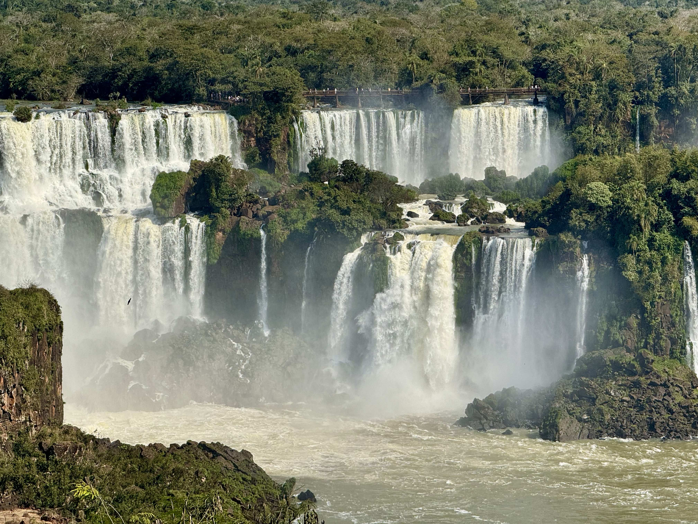
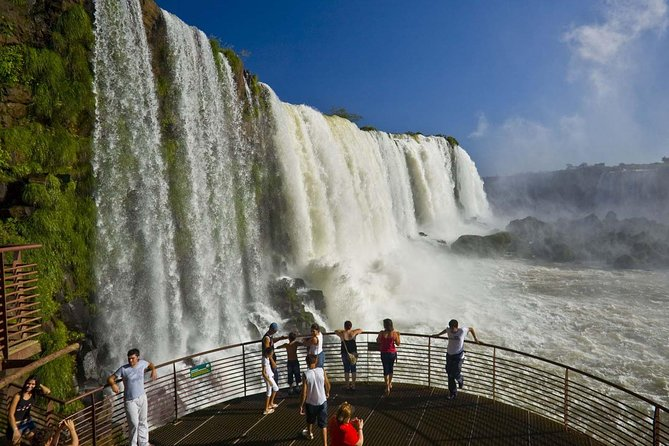

Apresentação
As Cataratas do Iguaçu são uma das maiores e mais belas maravilhas naturais do mundo. Elas estão localizadas no Rio Iguaçu, na fronteira entre o Brasil e a Argentina, e são famosas por suas inúmeras quedas-d’água e pela beleza impressionante da natureza. No lado brasileiro, as cataratas ficam no Parque Nacional do Iguaçu, no estado do Paraná. O local abriga uma grande diversidade de animais e plantas, sendo muito importante para a preservação do meio ambiente. Em 2011, as Cataratas do Iguaçu foram reconhecidas como uma das Novas Sete Maravilhas da Natureza. Além de atrair turistas de diversas partes do mundo, as cataratas são um símbolo da riqueza natural brasileira. Por isso, é fundamental preservar esse patrimônio para que as futuras gerações também possam conhecer e admirar essa maravilha da natureza..

Desenvolvimento no Paraná
As Cataratas do Iguaçu são uma das maiores e mais belas maravilhas naturais do mundo. Elas estão localizadas no Rio Iguaçu, na fronteira entre o Brasil e a Argentina, e são famosas por suas inúmeras quedas-d’água e pela beleza impressionante da natureza. No lado brasileiro, as cataratas ficam no Parque Nacional do Iguaçu, no estado do Paraná. O local abriga uma grande diversidade de animais e plantas, sendo muito importante para a preservação do meio ambiente. Em 2011, as Cataratas do Iguaçu foram reconhecidas como uma das Novas Sete Maravilhas da Natureza. Além de atrair turistas de diversas partes do mundo, as cataratas são um símbolo da riqueza natural brasileira. Por isso, é fundamental preservar esse patrimônio para que as futuras gerações também possam conhecer e admirar essa maravilha da natureza.

Importância para a identidade cultural paranaense
O Parque das Aves possui grande importância para a identidade cultural do Paraná por representar o compromisso do estado com a preservação da natureza e da biodiversidade. Além de proteger espécies ameaçadas, o parque incentiva a educação ambiental e desperta o respeito pela fauna brasileira. Como um dos principais pontos turísticos do Paraná, fortalece a imagem do estado como um destino que une conservação ambiental, turismo sustentável e valorização do patrimônio natural, despertando orgulho nos paranaenses e contribuindo para o reconhecimento da riqueza ambiental da região.

Curiosidades
Você sabia que as Cataratas do Iguaçu possuem cerca de 275 quedas-d’água? Uma das mais famosas é a Garganta do Diabo, que tem aproximadamente 80 metros de altura e é a maior queda do conjunto. Outra curiosidade é que as cataratas ficam na fronteira entre o Brasil e a Argentina, e cada país oferece uma vista diferente desse espetáculo natural! 🌿 É uma das paisagens naturais mais impressionantes do mundo! vv
Existem mais de 1400 aves vivendo no Parque das Aves!
Onde pelo menos 50% dessas aves foram resgatadas do tráfico animal! Os moradores do Parque das Aves Foz do Iguaçu são beija-flores, canários, cardeais, casuar, Chauá, colhereiro, corujas, curió, uru, Flamingo-africano e flamingo-chileno, urubus rei, espécies de papagaios, mutum-do-sudeste, mutum-de-penacho, tucano-toco e tucano-de-bico-verde, murucututu, macaranãs, macucos, mais de 100 araras de diversas espécies, além de muito mais animais e aves fenomenais!